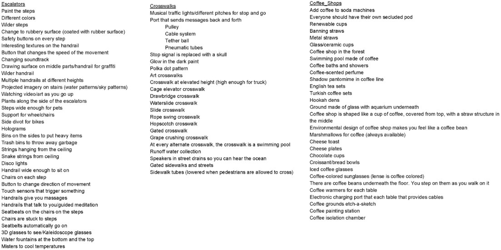

The goal of this project is to design an intervention for a transition space, which is defined as any space, physical or mental, where a transition may occur. The intervention should serve a number of purposes, which may include improving, probing, or challenging the space.
During the initial phases of the project, we brainstormed improvements for all three choices of transition spaces that were available to choose from: escalators, Starbucks stores, and crosswalks.
We chose to explore escalators not only because they are obviously in the business of constant transitioning, but also because of the variety of complex interactions that can occur there. Specifically, we are engaging with escalators situated within MARTA stations to study the dynamic of a transitional space within a transitional space.

Doraville, Midtown, Arts Center, and North Ave.: each of us chose a different MARTA station to explore. In each station, we were looking to examine what ways we could include principles such as autonomy and choice within our design intervention.
I studied the Doraville MARTA station.
We recognized the power of the individual and shared experiences that occur there, so we wanted to design a kit of parts to honor those singular and collective perspectives.
The kit of parts we designed consists of four items: environmental projections, narrative displays, dimensional alternations, and topographical augmentations. True to the nature of the kit of parts, each of these interventions was meant to be interchangeable across all four escalators, and across all escalators in general.

Additionally, each of us wrote a story about our personal experiences with escalators as a means of creating interventions which could leverage others’ individual experience. Here is mine:
And from that story I created my component of the kit of parts: the narrative display, which consists of a comic projected onto the escalator's adjacent wall. The projection of personal stories in this manner takes advantage of the individual and shared nature of the escalator in that the story is individual, but the arena that it is presented in is shared. Of course, this design intervention also includes our design criteria of autonomy and choice, since escalator riders can always choose whether to read it or not.


As we progressed with our interventions, we recognized that there was a need for practicality. We wanted to present a solution that could be implemented in a timely and economical manner. All of us reflected on our kit of parts and decided that it would be beneficial if we narrowed down our four solutions to a single solution which could be easily adapted to a multitude of escalators.
After careful deliberation, we decided to focus on projections as a design intervention since it fit our needs. In order to adapt some of our other ideas into projections, we drew inspiration from works of public art, performance, and graffiti.
With these precedents, we created projections which engaged the various interactions of the MARTA escalators.

The projections I created explored questions such as “Am I alone?”, “What am I doing here?”, and “What do we leave behind?”
These questions intrigued me because they can be applied not only to one person, but also to groups of people. The projections I made to answer them serve as a reminder that even the simple act of riding the escalator can be used to change perspectives and elevate experiences.

"Everyone has their own commute, but there is a brief moment where they are all together here. This atmospheric projection is meant to be a meditative space of sorts. To remind us that we are all experiencing the same situation alone, but together."
"We want to draw attention back to the escalator itself rather than the spaces around it. An evocative quote or phrase can be projected on the this side rail of the escalator. Since, in this case, the words are positioned so that they are in the same direction that the escalator riders are moving in, reading them will not be dangerous to the users. The poem here, by Thoreau, reads 'My life has been the poem I would have writ But I could not both live and utter it.'"
"Hands are a very public part of our bodies. They are used to connect with the people and the world around us. When we interact with a space, we leave things behind that we cannot always keep track of. This design intervention lets us see the traces we leave behind and allows us to make space to people to join after us. It let's them know that many have embarked on the same journey that they are on and that they'll be alright."